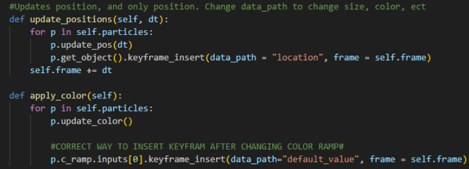
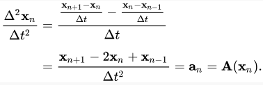
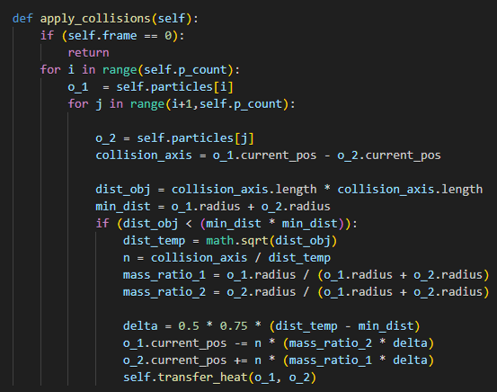
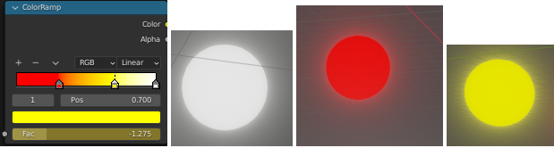
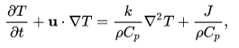
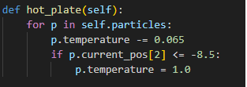

Fire particle sytem
Environment
For this project, I decided to use blender as my main rendering program. All of the code I personally wrote was in python and the final product is a blender add-on with a UI interface that starts the simulation. All of the parameters can be edited within the python scripts. The add-on UI and basic implementation was done by a Visual Studio Code plugin called “Blender Development” by Jacques Lucke which can be found here: https://marketplace.visualstudio.com/items?itemName=JacquesLucke.blender-development
Blender is mainly used to render the particles and apply shading as well as color. I used the built-in animation system to build an animation from a start time frame and end time frame. The code builds the animation frame-by-frame shown here:
Physics
Verlet integration was used for to simulate the physics of the particles using the equation:
- Gravity
- I simply added the gravity acceleration each step for every particle. This was the first force that I implemented and tested because it was the simplest.
- Boundaries
- For the bounding box/sphere, I applied constraints on every particle so that if it ever exits the boundary, its current position will be relocated to be within the boundaries. I decided to use a sphere for most of my simulations because it more accurately showed the effects of fire.
- Collision
- I used a brute force method for collisions, looping over each particle in a nested loop to check if the distance between them was greater than the sum of their radius. If so, I pushed each particle back by half its radius in the same axis they collided in. 
- Temperature
- Since this is a fire simulation, I added temperature as an attribute to the Particle class. The temperature will determine each particle’s color. This is done by creating a color ramp and mapping the temperature to the color. This was done through blender’s material function and I apply the material to each particle with its color. Everytime its temperature changes, I needed to update the color as well, so this was done by inserting a frame with its datapath as the color ramp change. 
- Heat transfer
- Everytime a particle came in contact with another particle, there needed to be thermal conduction. This was done by using the Heat transfer equation. We also needed to make sure that the heat transferred from the hotter particle to the cooler particle as well.
- Thermal buoyancy
- Since higher temperatures means higher energy, the particles need to display some kind of effect that indicates that they are in a higher energy state. This was done by implementing thermal buoyancy using the thermal buoyancy equation. The equation was edited a little bit to just simply approximate the buoyancy. 
- Heat source
- For the simulation to continually run, there needed to be a constant heat source that was heating up the particles. I decided to place a “Hot Plate” at the bottom of the bounding sphere, so that all particles at that location was heated to the maximum temperature. 


Results
Output 1
- Particlecount: 1750
- Particle radius: 0.1 m
- Totalframes: 400
Output 2
- Particlecount: 50
- Particle radius: 1 m
- Totalframes: 200